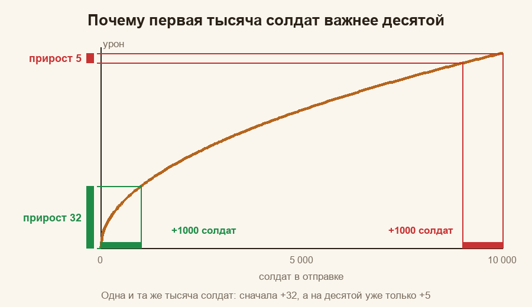
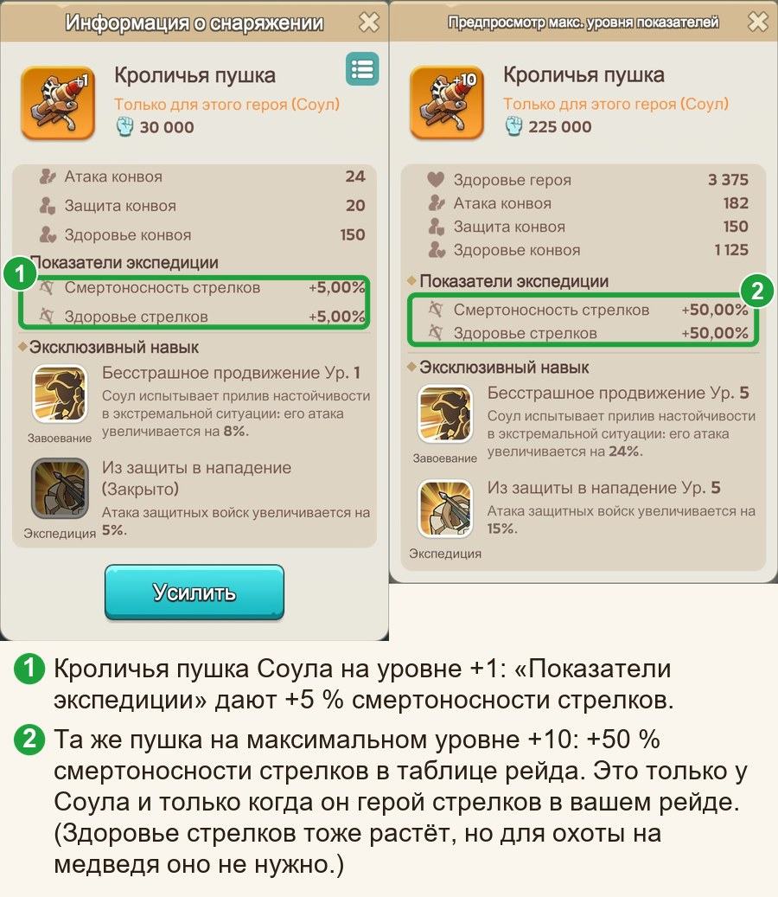
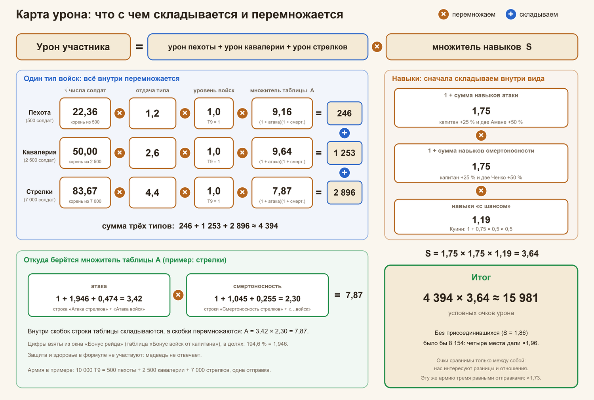

Охота на медведя: почему так
Гайды: Главная · Памятка · Простыми словами · Почему так (вы здесь) · Математика
Здесь мы открываем капот: откуда берутся правила из «Памятки». Математики ровно столько, сколько было в школе: корень, процент и умножение. Если корень вы забыли, он всё равно вернётся: такова его природа.
Содержание
- Что нужно вспомнить из школы
- Из чего складывается урон
- Откуда берутся числа отдачи и уровня
- Почему много ударов лучше одного
- Почему 5 % пехоты и 25 % кавалерии
- Почему слабые войска тоже стоит отправлять
- Атака и смертоносность: две стороны прямоугольника
- Почему рейды сравнивают по смертоносности
- Навыки героев: сложение внутри, умножение снаружи
- Четыре места присоединившихся и почему важно, кого поставить
- Как выбрать героя капитана
- Где у системы слепое пятно
- Чего нет в формулах и почему
- Всё вместе: карта урона
- Насколько можно доверять цифрам
- Мини-проверка
Сначала переучите войска до самого высокого доступного уровня, потом обучайте новых. Уровень входит в урон множителем около 1,19, а число солдат стоит под корнем, поэтому переобучение армии на ступень выше равно прибавке примерно 40 % бойцов, места в марше не требует и к тому же идёт быстрее и дешевле обучения: расчёт в разделе «Почему переучивать выгоднее, чем набирать».
Что нужно вспомнить из школы#
Всего четыре вещи, и ни одна не кусается.
- Квадратный корень.
√100 = 10,√25 = 5,√4 = 2. Корень из числа вдвое большего — это не вдвое больше, а примерно в 1,41 раза больше (√2 ≈ 1,41). Запомните эту странную дробь, она нас ещё выручит. - Процент как множитель. «+25 %» означает «умножить на 1,25». «+100 %» — умножить на 2. Проценты в игре почти всегда именно так и работают.
- Умножение vs сложение. Если бонус прибавляется к другому, мы складываем проценты. Если бонусы перемножаются, складывать нельзя: надо перемножать множители. Разница бывает заметной.
- Среднее ожидание. Если в половине случаев вы получаете +50 %, то «в среднем» это +25 %. Лотерея, но с понятным средним.
Из чего складывается урон#
Каждый тип войск (пехота, кавалерия, стрелки) бьёт по медведю отдельно, и урон типа считается так:
урон типа = √(число солдат) × отдача типа × уровень войск × множитель таблицы
Что здесь что:
- Число солдат стоит под корнем. Из этого корня вырастает полдюжины правил из «Памятки».
- Отдача типа: во сколько раз один солдат этого типа бьёт слабее или сильнее стрелка при прочих равных. Откуда берётся число, читайте в разделе «Откуда берутся числа отдачи и уровня».
- Уровень войск: Т9 принимаем за 1,00, каждый уровень ниже слабее примерно в 1,19 раза (там же объяснение).
- Множитель таблицы берётся из «Бонуса рейда»: у каждого типа свой, он зависит от атаки и смертоносности именно этого типа.
Внутри одного типа всё перемножается. Урон разных типов не перемножается, а складывается: каждый тип наносит свой урон, и эти уроны просто суммируются. (Если бы типы перемножались, армия без пехоты била бы ровно на ноль.) Дальше сумма умножается на множитель навыков, один на всех:
урон участника = (урон пехоты + урон кавалерии + урон стрелков) × множитель навыков
Множитель навыков складывается из навыков героев капитана и четырёх навыков присоединившихся (подробно ниже). Цифры из таблицы и навыки героев не складываются между собой: это два разных множителя, которые перемножаются. «+25 % смертоносности» от навыка не прибавляется к смертоносности из таблицы, а умножает весь результат. Армия у вас с собой, а множители рейда выбираете вы, когда решаете, в какой рейд идти. Все формулы на одной картинке, с числами одного рейда, смотрите в конце: «Всё вместе: карта урона».
Откуда берутся числа отдачи и уровня#
В карточке войск («Конный двор», «Казармы», «Стрельбище») у каждого уровня есть Атака и Смертоносность одного солдата. Вот кавалерия:
| Уровень | Атака | Смертоносность | Атака × смертоносность | Во сколько раз больше предыдущего |
|---|---|---|---|---|
| Т7 | 10 | 11 | 110 | |
| Т8 | 11 | 12 | 132 | 1,20 |
| Т9 | 12 | 13 | 156 | 1,18 |
Урон солдата растёт вместе с произведением «атака × смертоносность». У стрелков и кавалерии шаг между соседними уровнями получается 1,17–1,20, а реальные рейды дают в среднем 1,19: это и есть «каждый уровень ниже слабее в 1,19 раза». (Полные таблицы по всем типам и уровням, с проверкой, лежат в «Математике»: «Уровни войск и отдача типов».) У пехоты по карточкам шаг больше (1,27–1,31), но пехоты в составах мало, и отдельно мы это не проверяли.
А отдача типа? Здесь мы оценили её тремя способами. Они сходятся по порядку (стрелок сильнее кавалериста, а тот сильнее пехотинца), но чуть расходятся по размеру:
| Откуда оценка | Стрелок | Кавалерист | Пехотинец | Ошибка прогноза на 35 рейдах |
|---|---|---|---|---|
| Наши измерения по настоящим рейдам | 1,00 | 0,59 | 0,27 | 2,0 % |
| Публичный калькулятор урона по медведю | 1,00 | 0,62 | 0,21 | 2,3 % |
| Карточки войск: атака × смертоносность Т9 (182 : 156 : 81), стрелкам +10 % за «Дальний удар» | 1,00 | 0,78 | 0,40 | 2,9 % |
Лучше всего с рейдами сходятся наши измерения, поэтому в расчётах стоят они. Откуда именно такое отношение, мы не знаем: формулу боя игра не показывает, а в карточке виден не весь набор того, что влияет на урон. Зато важно другое: какая бы оценка ни была верной, состав «5 % пехоты, 25 % кавалерии, остальное стрелки» теряет не больше 1–2 % урона (расчёт в разделе про состав и в «Математике»). Параметр «Сила» из карточки (50 у Т9) в расчёте не участвует.
Почему много ударов лучше одного#
Возьмём простой пример: 10 000 солдат одного типа и одного уровня.
- Одним маршем:
√10 000 = 100очков урона (условных). - Двумя маршами по 5 000: каждый даёт
√5 000 ≈ 70,7, вместе2 × 70,7 ≈ 141.
Одна и та же армия, а результат больше на 41 %. Не колдовство: корень «растёт всё медленнее». Первая тысяча солдат даёт +32, а десятая только +5. Каждая следующая тысяча толкается в той же куче всё сильнее. Как в лифте в час пик.

Если разбить армию на k равных частей, каждая часть даёт √(N/k), а вместе k × √(N/k) = √k × √N. То есть урон растёт в √k раз:
| Равных отправок | 1 | 2 | 3 | 4 | 5 | 6 |
|---|---|---|---|---|---|---|
| Урон, % от одного удара | 100 | 141 | 173 | 200 | 224 | 245 |

Вывод: отправляйте всё и делите на равные части. Равные потому, что корень «любит» ровность: две части по 5 000 лучше, чем 9 000 и 1 000 (√9000 + √1000 ≈ 95 + 32 = 127 против 141).
А если рейды разной мощности#
Предположим, один рейд мощнее другого в 1,5 раза (мощность рейда — его итоговый множитель: таблица и навыки вместе). Тогда делить поровну уже невыгодно: в более мощный стоит отправить больше. Правило такое: доля армии пропорциональна квадрату мощности рейда. Для рейдов 1 и 1,5 это 1² : 1,5² = 1 : 2,25. Чтобы получить проценты, сложим части: 1 + 2,25 = 3,25. Первому рейду достаётся 1 / 3,25 ≈ 0,31, то есть 31 %, второму 2,25 / 3,25 ≈ 0,69, то есть 69 %. Выигрыш против равного деления около 2 %: поэтому из-за небольшой разницы не мучайтесь. Если разница в разы, тогда да, мощному побольше.
Почему 5 % пехоты и 25 % кавалерии#
Один солдат у разных типов даёт разный урон. Если взять стрелка за единицу, то (при одинаковых бонусах рейда):
| Тип | Отдача одного солдата (из данных рейдов) |
|---|---|
| Стрелок | 1,00 |
| Кавалерист | 0,59 |
| Пехотинец | 0,27 |
Казалось бы: берём одних стрелков, они отдают больше всех. Звучит как надёжный план. Но число солдат стоит под корнем. Десятитысячный стрелок прибавляет почти ничего, а первый кавалерист прибавляет сразу и много. Где-то посередине выгоды выравниваются. Математика утверждает, что оптимальные доли пропорциональны квадратам отдачи:
| Тип | Отдача | Квадрат | Доля |
|---|---|---|---|
| Стрелки | 1,00 | 1,00 | 70 % |
| Кавалерия | 0,59 | 0,35 | 25 % |
| Пехота | 0,27 | 0,07 | 5 % |
Откуда проценты: 1,00 + 0,35 + 0,07 = 1,42, и дальше 1,00 / 1,42 ≈ 70 %, 0,35 / 1,42 ≈ 25 %, 0,07 / 1,42 ≈ 5 %.
Так получаются «5 % пехоты и 25 % кавалерии». Если у капитана кавалерия на 30 % слабее стрелков, её доля падает примерно до 14 %. Если на 30 % сильнее, растёт до 35 %. Отсюда правило из «Памятки»: «сравните бонусы кавалерии и стрелков».
А если отдача типов на самом деле другая#
Мы не знаем точной формулы боя, поэтому проверили: что будет, если окажется верной другая оценка отдачи (все три оценки в таблице раздела «Откуда берутся числа отдачи и уровня»). Лучший состав для каждой оценки и потеря урона от состава 5 / 25 / 70:
| Если верна оценка | Лучший состав (пехота / кавалерия / стрелки) | Потеря при 5 / 25 / 70 |
|---|---|---|
| наши измерения | 5 / 25 / 70 | 0 % |
| публичный калькулятор | 3 / 27 / 70 | 0,1 % |
| карточки войск (+10 % стрелкам) | 9 / 34 / 57 | 1,1 % |
| карточки войск без бонуса | 10 / 38 / 52 | 1,8 % |
Потеря не больше 1,8 %. Поэтому вопрос «какое число точнее» на практике почти ничего не меняет.
Почему не нужна точность до солдата#
Вершина кривой плоская. Если взять кавалерии вдвое меньше или вдвое больше, потеря невелика:

- Кавалерия от 15 до 35 %: теряете меньше 1 %.
- Пехота 3 % вместо 5 %: теряете около 0,15 %.
- Совсем без пехоты и кавалерии: одни стрелки теряют около 16 %. Ощутимо, и это самая дорогая ошибка.
- Пехоты 0 % при нормальной кавалерии: около −2,6 %.
Поэтому правило простое: не гонитесь за цифрами, берите «примерно столько» и не забывайте про пехоту и кавалерию. Линейка тут не понадобится.
Почему слабые войска тоже стоит отправлять#
Каждый уровень войск сильнее предыдущего примерно в 1,19 раза (откуда это число, смотрите в разделе про карточки выше): Т9 против Т8 на 19 % сильнее, Т8 против Т7 тоже. Пример: у вас 9 000 войск Т9 и 1 000 войск Т8.
- Только Т9:
√9000 × 1 = 94,9. - Все 10 000: средний уровень
(9000 × 1 + 1000 / 1,19) / 10 000 ≈ 0,984, урон√10 000 × 0,984 ≈ 98,4. - Если бы все 10 000 были Т9: 100.
Выходит, что слабые бойцы лишь на 1,6 % хуже идеала, а без них вы теряете 5 %. Отправить лучше, чем оставить дома. Пусть ветераны тоже подышат свежим воздухом.
Почему переучивать выгоднее, чем набирать#
Переучивание делает каждого солдата сильнее в 1,19 раза. А урон растёт как уровень × √число. Чтобы получить такой же результат, добавляя новых солдат, надо умножить их число на 1,19 × 1,19 = 1,42: уровень входит в урон как есть, а число стоит под корнем, и чтобы корень дал те же 1,19, число придётся возводить в квадрат. Итого: переучивание на следующий уровень равно по эффекту прибавке около 40 % солдат.
Есть и второй довод, про время. Партия обучения или переобучения в лагере занимает одно и то же время. Например, за это время можно обучить 653 бойцов Т9 или переучить 4 753 бойцов с Т8 на Т9. Отношение примерно семь к одному одинаково, потому что скорость обучения действует на обучение и на переобучение одинаково. То есть за то же время вы переведёте на следующий уровень в семь раз больше бойцов, чем обучите новых. Вот почему в «Памятке» сначала переводим войска на высокий уровень и только потом обучаем новых.
Атака и смертоносность: две стороны прямоугольника#
Множитель таблицы для каждого типа войск считается так:
множитель таблицы = (1 + атака) × (1 + смертоносность)
Бонусы атаки и смертоносности перемножаются, как стороны прямоугольника. Пример: у рейда А атака 230 %, смертоносность 70 %. У рейда Б по 150 %. Суммы одинаковые (300 и 300), а множители разные:
- Рейд А:
3,3 × 1,7 = 5,61 - Рейд Б:
2,5 × 2,5 = 6,25
Ровный рейд сильнее перекошенного на 11 %.

Следствие: прибавка к меньшей стороне полезнее. Добавим +10 процентных пунктов рейду А:
- к смертоносности (+10):
3,3 × 1,8 = 5,94(+5,9 %); - к атаке (+10):
3,4 × 1,7 = 5,78(+3,0 %).
Поэтому в «Памятке» написано «подтягивайте то, что меньше». Короткая сторона скромная, зато самая благодарная.
Почему рейды сравнивают по смертоносности#
В таблице капитана много строк, но пользоваться удобнее одной. У большинства капитанов атака отличается мало (допустим, 190 % и 200 %: это 2,9 против 3,0, всего +3 %). А смертоносность отличается сильно (допустим, 70 % и 130 %: 1,7 против 2,3, то есть +35 %). Различия в смертоносности и перевешивают.
Проверка простая: мы взяли 30 таблиц настоящих капитанов, посчитали точный урон, а потом упорядочили таблицы по одной «Смертоносности стрелков». Порядок совпал почти полностью (коэффициент ранговой корреляции 0,95). Поэтому можно сравнивать по одной строке. Остальные строки не обидятся.
Не забывайте: навыки героев в таблице не отображаются. Таблица показывает цифры капитана и блоки «Экспедиция» его героев (какие именно блоки, смотрите в разделе «Блок «Экспедиция» в карточке героя»), а навыки смотрите отдельно: они меняют итог ещё в полтора-два раза (см. ниже).
Навыки героев: сложение внутри, умножение снаружи#
Походные навыки героев бывают трёх видов: на атаку, на смертоносность и «с шансом» (шанс усилить урон). Правило такое:
- Навыки одного вида складываются между собой.
- Суммы разных видов потом перемножаются.
множитель навыков = (1 + прибавки атаки) × (1 + прибавки смертоносности) × (1 + средние прибавки «с шансом»)
Пример: у капитана два навыка на атаку (+25 % и +25 %) и один на смертоносность (+25 %). Тогда:
(1 + 0,25 + 0,25) × (1 + 0,25) = 1,5 × 1,25 = 1,875
Такой рейд бьёт почти вдвое сильнее, чем рейд без навыков. Напомним: к цифрам из таблицы эти бонусы не прибавляются, а умножают весь результат.
Навыки «с шансом»#
Навык вроде «с шансом 50 % войска наносят на 50 % больше урона» в среднем даёт 0,5 × 0,5 = +25 %. Несколько таких навыков складываются между собой: два по +25 % в среднем дают 1 + 0,25 + 0,25 = 1,5. Если в рейде есть и они, и обычные навыки, итог получается умножением, например 1,875 × 1,25 = 2,34 с одним «шансовым» навыком Куинна.
В каждом конкретном рейде действует случай: два одинаковых рейда могут отличаться на 6–9 %, и это нормально. Удача — дама капризная даже на охоте. По данным рейдов такая простая модель («средняя прибавка = шанс × прибавка», без поправочных коэффициентов) работает не хуже, чем более хитрые варианты: разница в точности статистически незаметна.
Четыре места присоединившихся и почему важно, кого поставить#
В рейде четыре места под навыки присоединившихся, и ещё раз: занимают их навыки с самым высоким уровнем, а не самые полезные; при равном уровне выше тот, кто стоит выше в списке рейда, а поднимать игроков наверх может капитан (см. «Перенос участника наверх списка»). Их вклад в урон считается тем же правилом «складываем внутри, перемножаем снаружи».
Пример. У капитана один навык атаки и один смертоносности (по +25 %): базовый множитель 1,25 × 1,25 = 1,5625. Теперь в рейд пришла Ченко (смертоносность +25 %). Тогда:
1,25 × (1 + 0,25 + 0,25) = 1,25 × 1,5 = 1,875
Рост урона рейда: 1,875 / 1,5625 = 1,2, то есть на 20 %.
Так меняется урон рейда при разном заполнении четырёх мест (первые четыре строки показывают, как растёт прибавка с каждой следующей Ченко или Ёну):
| Что стоит в четырёх местах | Рост урона рейда |
|---|---|
| одна Ченко/Ёну | ×1,20 |
| две Ченко/Ёну | ×1,40 |
| три Ченко/Ёну | ×1,60 |
| четыре Ченко/Ёну | ×1,80 |
| две Ченко/Ёну + две Амане | ×1,96 |

Прибавка линейная? Да, если считать от рейда без присоединившихся: +20 %, +40 %, +60 %, +80 %, потому что каждая новая смертоносность добавляет к сумме по 0,25, то есть к исходным 1,25 по одной пятой. Если же считать от предыдущего шага, прибавка слегка тает: ×1,20, затем ×1,17, затем ×1,14, затем ×1,125.
Почему две плюс две лучше, чем четыре одинаковых? Сумма внутри вида растёт на одно и то же число, а общий результат умножается: четыре смертоносности дают 1,25 × 2,25 = 2,81, а две плюс две атаки дают 1,75 × 1,75 = 3,06. Рассуждение то же, что с прямоугольником: ровные стороны выгоднее.
Навык 4 уровня вместо 5 даёт не +25 %, а +20 %. Если все четыре навыка лучшей четвёрки на 4 уровне, рейд получает 1,74 вместо 1,96, то есть на 11 % меньше. Прокачка одного навыка на уровень вверх приносит очки всему рейду. Редкий случай, когда ваша прокачка радует не только вас.
Какой набор навыков нужен именно этому рейду#
Набор «две смертоносности и две атаки» не универсален. Он лучший, когда у капитана суммы навыков атаки и смертоносности примерно равны. В общем случае цель одна: выровнять две суммы. Добавляйте навык того вида, где сумма сейчас меньше.
Пример. У капитана навыки атаки дают +50 %, смертоносности +25 %. Базовый множитель 1,5 × 1,25 = 1,875. Присоединяется:
- Ченко (смертоносность +25 %):
1,5 × 1,5 = 2,25, рост ×1,20; - Амане (атака +25 %):
1,75 × 1,25 = 2,19, рост ×1,17.
Выигрывает Ченко, потому что смертоносность была слабее. Так что набор для каждого рейда свой, и подсказка к нему лежит на виду: навыки капитана и четыре места присоединившихся.
Важное уточнение: цифры атаки и смертоносности в таблице капитана тут ни при чём. Таблица образует свой множитель (первая скобка), а навыки образуют свой, отдельный. Если у капитана в таблице смертоносность проседает, четыре смертоносности из навыков её «не подтянут», а лишь сделают отдельный множитель более перекошенным. Выравнивать надо суммы внутри навыков. (Это следует из модели, которая в среднем ошибается на 2 %; прямой проверки «таблица и навыки действуют вместе» мы не делали.)
Перенос участника наверх списка#
В лобби рейда строку участника можно раскрыть стрелкой справа (внутри видны его войска), а кнопка со стрелкой вверх в раскрытой строке переносит его на верх списка, сразу под капитана. Нажимать её может только капитан. Порядок в списке участвует в отборе четырёх мест, но как второй ключ: навыки сначала сортируются по уровню, и только при равном уровне выше тот, кто выше в списке рейда. Поэтому перемещение влияет только на порядок навыков того же уровня, что и у перемещаемого игрока. Пример: два навыка 5 уровня и пять навыков 4 уровня на четыре места. Пятые уровни займут два места, а за оставшиеся два будут бороться четвёртые, и здесь капитан сам решает, кого поднять. Поднятый наверх игрок с навыком 4 уровня станет первым среди четвёртых, но выше пятых не окажется. А поднятый наверх игрок с навыком 5 уровня встанет впереди других пятых.
Как выбрать героя капитана#
Выбирайте по актуальной таблице вашего рейда и по навыкам: цифры героя в таблице зависят от его звёзд, уровня и снаряжения, у каждого игрока они свои. Порядок такой:
- Таблица. Поставьте героя, откройте «Бонус рейда» и посмотрите «Атаку стрелков» и «Смертоносность стрелков» (и общие строки). Из них считается множитель таблицы
(1 + атака) × (1 + смертоносность). - Навыки. В таблице их нет, поэтому смотрите отдельно: вид навыка (атака, смертоносность, «с шансом») и его уровень. «+25 %» работает всегда. Навык «с шансом» даёт столько же в среднем на дистанции, то есть если усреднить много рейдов; в одном рейде результат может быть выше или ниже примерно на 6–9 %.
- Эксклюзивное снаряжение героя редкости SSR. В таблице оно уже учтено в том виде, как прокачано сейчас. Что оно даст при прокачке, нужно считать отдельно.
- Чего рейду не хватает. Прибавка весит больше там, где сумма меньше: +0,25 к сумме 1,0 даёт
×1,125, а к сумме 3,0 только×1,06. С «шансовыми» навыками так же: каждый следующий добавляет меньше предыдущего.
Пример: Куинн и Соул (оба стрелки). Вот таблицы одного и того же рейда, в котором по очереди стояли Куинн и Соул. Общие строки: атака войск +42,3 %, смертоносность войск +29,5 %.
| Куинн | Соул | |
|---|---|---|
| Атака стрелков | +196,3 % | +181,4 % |
| Смертоносность стрелков | +180,6 % | +185,6 % |
| Множитель таблицы стрелков | 3,386 × 3,101 = 10,50 | 3,238 × 3,151 = 10,20 |
| Навык | «с шансом»: в среднем +25 % | «+25 % смертоносности» |
Множитель считается так: (1 + атака стрелков + атака войск) × (1 + смертоносность стрелков + смертоносность войск). По таблице Соул слабее на 2,8 %. Смертоносность у него выше на 5 пунктов благодаря «Кроличьей пушке» уровня +1, а атака ниже из-за звёзд и уровня героя. Стрелки дают около 70 % урона, поэтому на весь урон это около 0,70 × 2,8 % ≈ 2 %.

Теперь навыки. Допустим, остальные навыки смертоносности у капитана дают +0,20. Соул добавляет 0,25 к этой сумме, Куинн даёт +0,25 «шансовой» прибавки (к другим «шансовым» навыкам рейда она складывается). Итог по двум вариантам рейда:
| Что ещё стоит в рейде | Таблица (Соул к Куинну) | Навыки (Соул к Куинну) | Итог |
|---|---|---|---|
| других «шансовых» навыков нет | 0,980 | 0,967 | 0,948: Куинн впереди примерно на 5 % |
| есть Явель и Зои с «шансовыми» навыками | 0,980 | 1,031 | 1,010: Соул впереди примерно на 1 % |
А если «Кроличью пушку» довести до уровня +10 (смертоносность стрелков +50 вместо +5, то есть ещё +0,45), множитель стрелков растёт в (1 + 2,151 + 0,45) / (1 + 2,151) = 1,14 раза, а весь урон примерно в 1 + 0,70 × 0,14 = 1,10 раза. Тогда итог 1,04 и 1,11: Соул впереди на 4 и 11 %. Исход зависит от того, что уже есть в рейде и как прокачаны герои, поэтому считайте по своей таблице. Полный расчёт с формулами смотрите в «Математике»: «Как выбрать героя: расчёт на примере».
Где у системы слепое пятно#
Система отбирает навыки присоединившихся по уровню (а при равном уровне по месту в списке рейда), на пользу она не смотрит. Она не знает, что защитный навык 5 уровня «хуже» полезного 4 уровня, просто сравнивает числа 5 и 4. Читать описания навыков она так и не научилась. Поэтому правило «если полезного героя нет, поставьте первым героя с самым низким уровнем первого правого навыка» работает как защита рейда: ваш бесполезный навык не вытеснит чужой полезный.
Чего нет в формулах и почему#
- Защита и здоровье. Медведь не отвечает, так что эти параметры нигде не появляются.
- Блок «Завоевание». Он влияет на героя в других боях, а в охоте на медведя герой лично не бьёт.
- Порядок героев у капитана. Таблица от порядка не зависит.
- Герои 2 и 3 у присоединившегося. Для рейда они не считаются: нужны только ради вместимости марша.
Всё вместе: карта урона#
Вся формула в одном выражении выглядит так:
урон = ( √N_пех · b_пех · q_пех · A_пех + √N_кав · b_кав · q_кав · A_кав + √N_стр · b_стр · q_стр · A_стр ) × S
где N — число солдат типа, b — отдача типа, q — уровень войск, A — множитель таблицы типа, S — множитель навыков. Каждый A и S сам раскладывается на скобки с атакой и смертоносностью. Чтобы не потеряться, посмотрите карту: на ней показан разбор одного рейда с числами, и видно, что складывается (синие плюсы), а что перемножается (оранжевые крестики).

Читать карту просто. Левая панель: три типа войск, внутри каждого четыре множителя, итоги типов складываются. Правая панель: навыки, внутри каждого вида складываем, виды перемножаем. Внизу слева видно, откуда берётся множитель таблицы. В конце обе части перемножаются. Числа этого рейда разобраны шаг за шагом в «Математике»: «Разбор одного рейда».
Насколько можно доверять цифрам#
Формулы подобраны по данным настоящих рейдов и в среднем ошибаются примерно на 2 %. Большинство игроков попадает в эти 2 %. Это не точное знание «как устроена игра изнутри», а рабочая модель, и работает она хорошо.
Поэтому разницу меньше 2–3 % искать бессмысленно: она тонет в случайности (два одинаковых рейда расходятся на 6–9 %). Крупные решения (равные отправки, смертоносность, четыре места, переучивание) дают десятки процентов, их и надо делать первыми.
Мини-проверка#
Три задачки, чтобы закрепить. Ответы спрятаны: нажмите на замазанный текст, чтобы открыть.
- Вы разбили армию на 3 равные отправки. Во сколько раз вырос урон по сравнению с одной отправкой? В
√3 ≈ 1,73раза. - Рейд А: атака 200 %, смертоносность 100 %. Рейд Б: 150 % и 150 %. Какой лучше и на сколько? А даёт
3 × 2 = 6, Б даёт2,5 × 2,5 = 6,25. Б лучше на 4 %. - Капитан имеет по одному навыку на атаку и смертоносность (по +25 %). Присоединилась Ченко (смертоносность +25 %). Во сколько раз вырос рейд? Было
1,25 × 1,25 = 1,5625, стало1,25 × 1,5 = 1,875; рост1,875 / 1,5625 = 1,2, то есть на 20 %.
Все формулы целиком, с выводом и проверкой, ждут в «Математике». Для тех, кому одного корня оказалось мало.